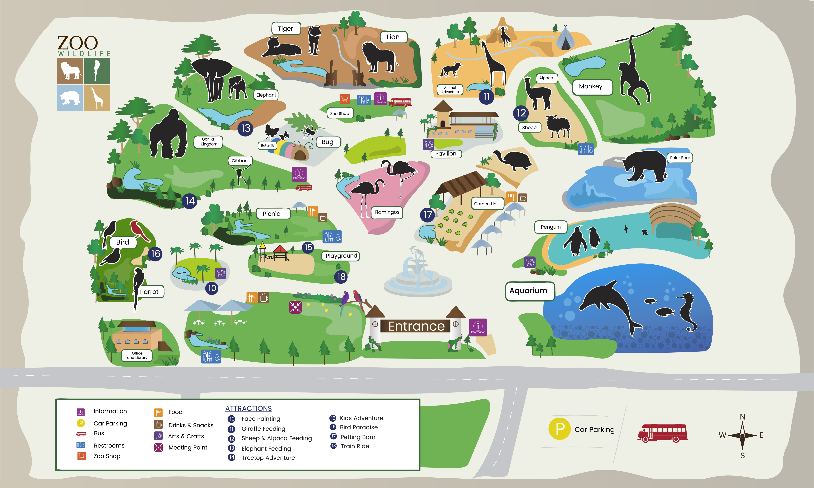

Zoológico SKY
SOBRE NÓS
O Zoológico SKY abriu suas portas em 2022, com pouco mais de 100 animais, contendo aves, répteis, mamíferos, anfíbios e invertebrados. A visita no Zoo permite conhecer animais raros e extremamente ameaçados, como orangotango, tigre-de-bengala, mico-leão-preto, rinoceronte-branco, onça-pintada, dentre outras espécies, além de compreender o papel dos zoológicos na conservação da natureza.

NOSSA INFRAESTRUTURA

ENDEREÇO E CONTATOS
Zoo SKY
Avenida Miguel Estefno, 4241, Água Funda – São Paulo – SP – CEP 04301-905
Em caso de dúvidas, envie um e-mail par atendimento.zoosky@zoologico.com.br
Aos domingos e feriados, a CET implanta mão única em trecho, próximo ao ZOO, da Av. Miguel Estefno no sentido centro-bairro.